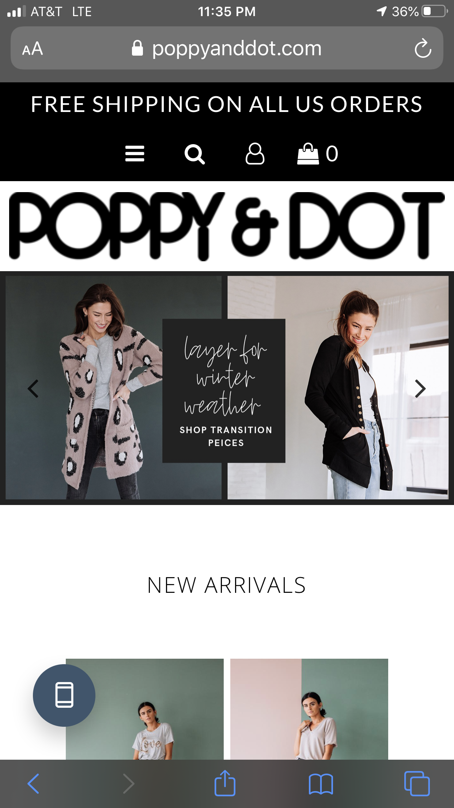

Fitt's Law

Pinterest is a good example of Fitt's Law. Everything is in a convienient location and can be reached relatively easy. If you are holding the phone in your right hand, it is not difficult to tap any of the images that you would like to pin or to seach for something with the search bar.
Alignment
This website uses good alignment. Everything is aligned nicely and the website is very symmetrical which creates a nice and organized feel. I like that they used two pictures at the top to match what they did at the bottom with the listed clothing pictures.
Contrast
Spotify's current design shows bright contrasting colors which really draws people in and creates interest in the page. It makes the page look fun and intrigues more people to use it by striking their eyes. It makes it more exciting, which is what a music website should be.